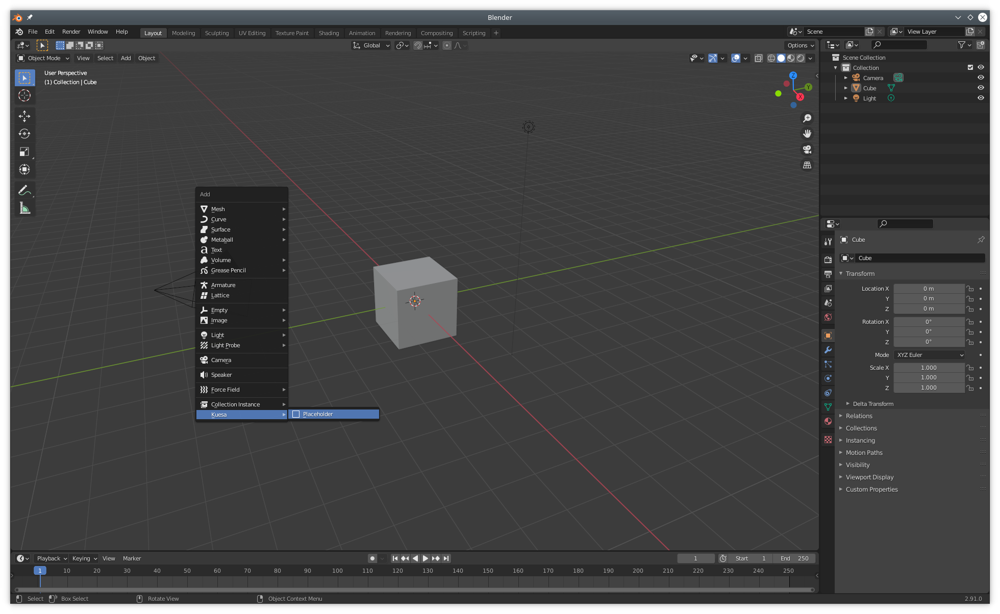
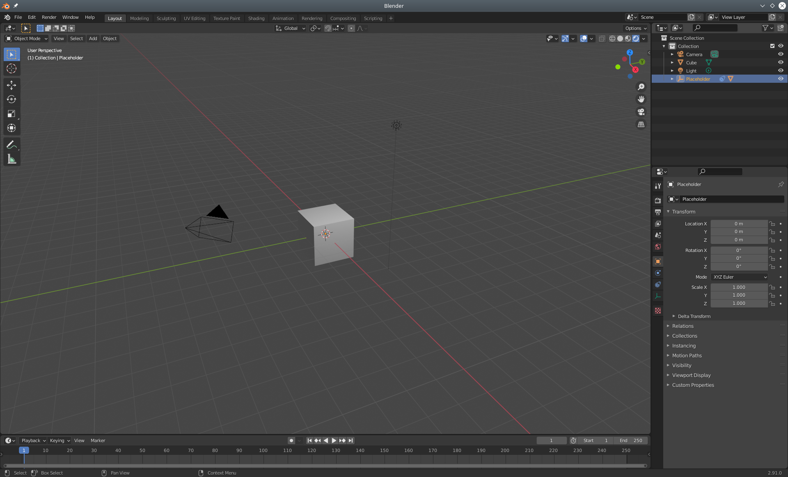
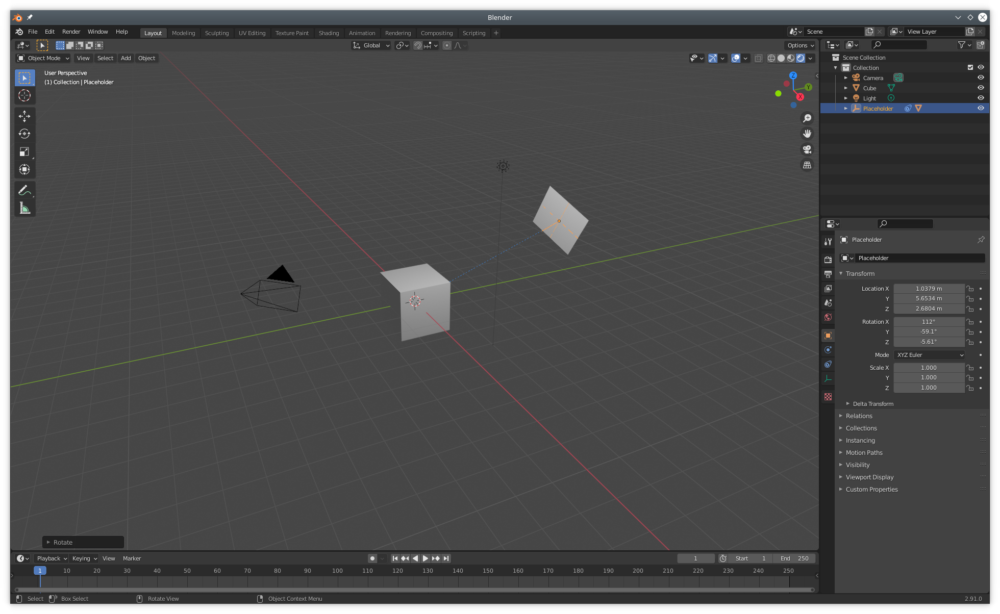
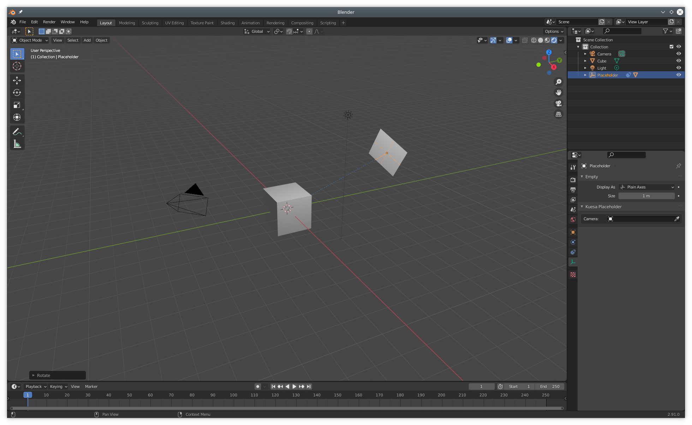
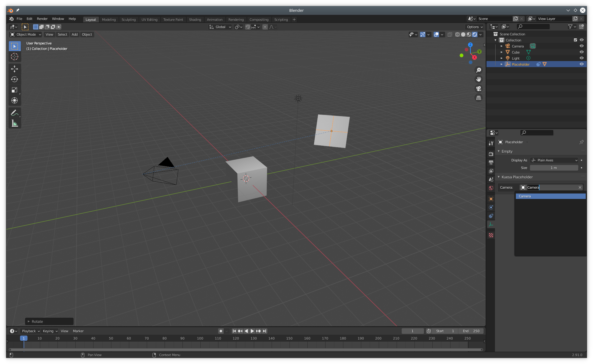
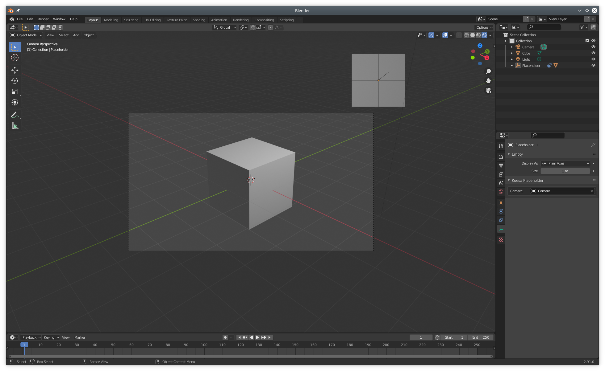
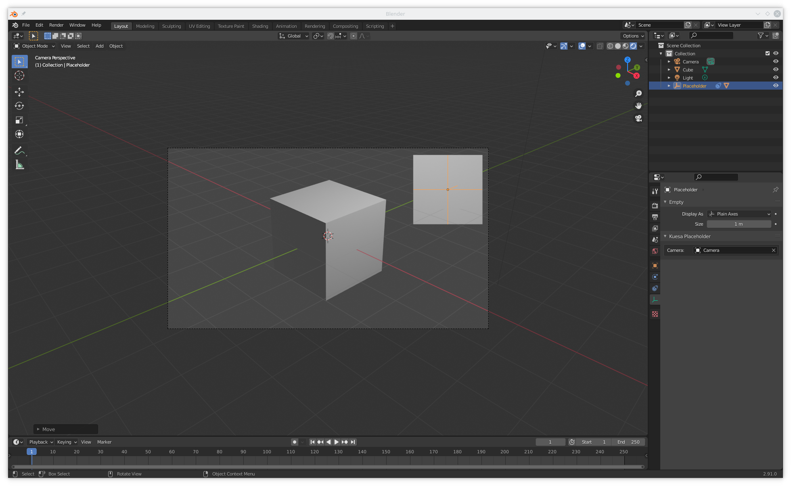
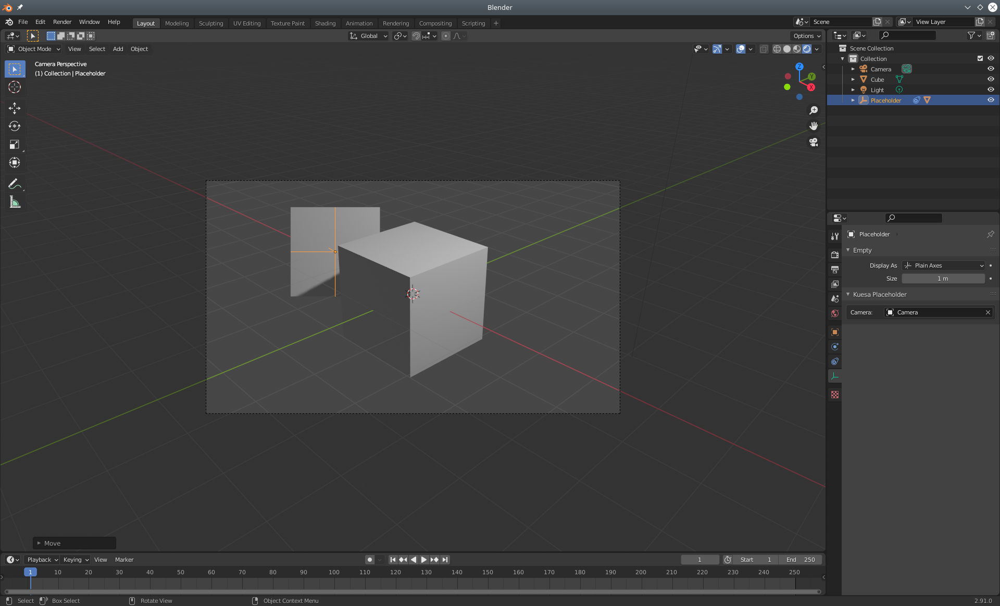
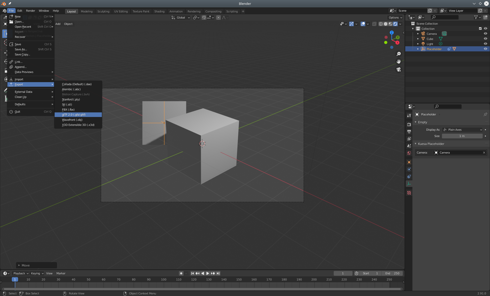
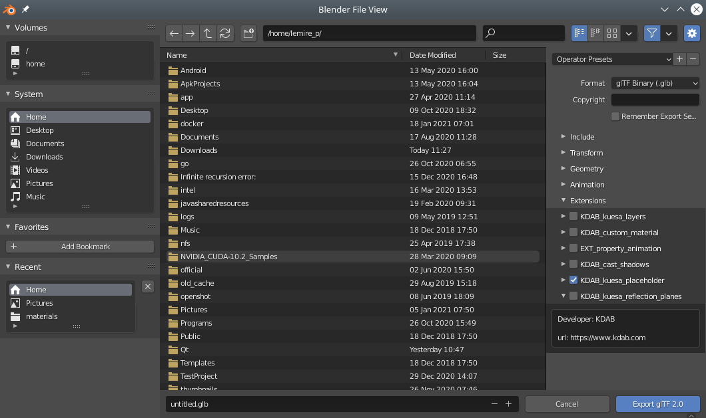

Often times, 3D artist will want to position 2D UI placeholders within the 3D scene. In turn, the developer will want to map some custom UI element, usually developed in QML to the area defined by the placeholder. In addition, the content should always remain facing the camera in use.
Kuesa provides handling for mapping placeholders defined in glTF files to QObject or QQuickItem. This is achieved by relying on a custom KDAB_placeholder glTF extension and the Kuesa::Placeholder and Kuesa::PlaceholderTracker objects.
Whereas Kuesa::TransformTracker allows to retrieve the screen space position of an Entity in the scene, Kuesa::PlaceholderTracker goes beyong that by providing access to positioning as well as sizing information.
Placeholders can be added by opening the add menu in Blender (Shift + A) and selection Placeholder in the Kuesa entry.

The placeholder is materialized as a 3D plane. It might be hidden by existing geometry in the scene. If that's the case, it can be selected from the Blender Scene outline and moved (G) or rotated (R) until it becomes visible.


With the placeholder selected in the outliner, it is possible to select the Camera it should be facing.


The placement and transformations of the placeholder can be fine tuned further by viewing the scene from the Camera's point of View (Num 0).


One thing to keep in mind is that Placeholders in Blender are 3D objects. For that reason, they can be hidden by other 3D objects placed in front. However once exported and used from the KuesaRuntime, Placeholders are merely a way of mapping 2D UI obects to the 3D scene. They have therefore no physical appearanced and given UI is usually rendered as an overlay, the target item will likely be drawn on top of any 3D object.

Select the gltf 2.0 exporter.

Make sure the KDAB_kuesa_placeholder extension is enabled.

Upon loading of a gltf file, placeholder instances will have to be retrieved from their collection, and tracked to update the screen space location. This can be achieved though the use of the Kuesa::PlaceholderTracker. On the tracker, scene size and camera should be specified. Optionally a target can be set on which the x, y, width and height properties will be set automatically.
Kuesa::SceneEntity *sceneEntity = new Kuesa::SceneEntity();
Kuesa::GLTF2Importer *importer = new Kuesa::GLTF2Importer();
QObject *uiTarget = new QObject();
Kuesa::PlaceholderTracker *placeholderTracker = new Kuesa::PlaceholderTracker();
placeholderTracker->setSceneEntity(sceneEntity);
placeholderTracker->setName(QStringliteral("PlaceHolder"));
placeholderTracker->setSceneSize({view.width(), view.height()});
placeholderTracker->setTarget(uiTarget);
placeholderTracker->setCamera(camera);
importer->setSceneEntity(sceneEntity);
importer->setSource(QUrl("file:///placeholder.gltf"));
Alternatively a simpler approach when using KuesaUtils::View3DScene is to simply do:
QObject *uiTarget = new QObject();
KuesaUtils::SceneConfiguration sceneConfiguration;
sceneConf.setSource(QUrl("file:///placeholder.gltf));
sceneConf.setCameraName("CameraName");
Kuesa::PlaceholderTracker *placeholderTracker = new Kuesa::PlaceholderTracker();
placeholderTracker->setTarget(uiTarget);
placeholderTracker->setName(QStringliteral("PlaceHolder"));
sceneConf.addPlaceholderTracker(placeholderTracker);
KuesaUtils::View3DScene view3d;
view3d.setActiveScene(&sceneConfiguration);
...
The KuesaUtils::View3DScene will take care of handling the current camera and viewport size.
Note: This was intented to use with QQuickItems as targets. For widgets, this might not work as well as Qt 3D currently requires a window container to integrate into widget applications. Window containers do not allow overlapping widgets.
Upon loading of a gltf file, placeholder instances will have to be retrieved from their collection, and tracked to update the screen space location. This can be achieved though the use of the Kuesa::PlaceholderTracker. On the tracker, scene size and camera should be specified. Optionally a target can be set on which the x, y, width and height properties will be set automatically.
import QtQuick 2.0
import Kuesa 1.3 as Kuesa
Item {
id: sceneRoot
Rectangle {
id: myItem
}
...
Kuesa.SceneEntity {
id: scene
...
Kuesa.GLTF2Importer {
id: gltf2importer
sceneEntity: scene
source: "file:///placeholder.gltf"
}
PlaceholderTracker {
name: "PlaceHolder"
camera: camera
screenSize: Qt.size(512, 512)
target: uiTarget
}
}
}
Alternatively a simpler approach when using View3D is to do:
import QtQuick 2.0
import Kuesa 1.3 as Kuesa
import Kuesa.Utils 1.3 as KuesaUtils
Item {
id: sceneRoot
Rectangle {
id: myItem
}
KuesaUtils.View3D {
id: scene3D
anchors.fill: parent
multisample: true
source: "qrc:/placeholder.gltf"
camera: "CameraName"
placeholderTrackers: [
Kuesa.PlaceholderTracker {
name: "PlaceHolder"
target: myItem
}
]
}
}
The View3D will take care of handling the current camera and viewport size.